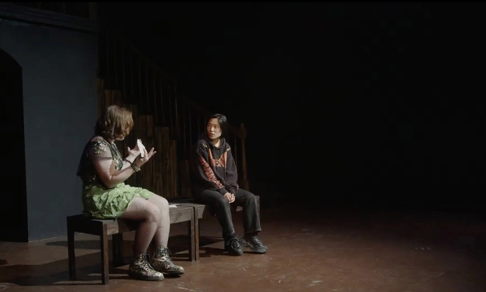

Internet Art
|
HAM.MAM Funding by First Kiss Theatre Artist Residency, December 2025 This hyper-textual live performance reimagines the traditional Iranian bathhouse within the browser window, where the changing room is a chatroom and spiritual ablution is an ambient ritual. The artist navigates the bathhouse by clicking, typing, reciting, and gesturing, transforming their desktop into a site of intimacy without physical proximity. Blending poetry, archival practice, and internet art performance, this piece explores the protocols of the hammam and questions how one might create what Amiri Baraka called a “spiritually‑oriented technology.” Presentations: *The Makers' Ensemble Space, 2025 |


Playwriting
|  |
LOCAL PROPHETS: A Play of Near-Collisions The Joy Who Lived Festival, Los Angeles, CA (April 2025) McCadden Place Theatre Director: Graham C. King Starring Blaire Battle, Maze Felix, and Ari Fromm Two trans friends meet at the Vermont/Beverly bus stop during ungodly hours of the day and collide over the end times. Reviewed on BroadwayWorld LA. |
|
Another Birth Tales of the Transcestors: The Divine, Los Angeles, CA (December 2024) Commissioned and produced by Celebration Theatre & Greenway Arts Alliance Director: Nico Pang Starring Gigi (Germain) Arroyo & Vico Ortiz In the afterlife, a writer seeks the aid of an enigmatic jinn to find their long-lost transcestor. Nominated for Best New Play by BroadwayWorld LA. Reviewed on BroadwayWorld LA and Beverly Press. |


Dramaturgy
|
Memory Lane is a Desert Road Eight Ball Theatre, Los Angeles, CA (April 2025) Director: Sarah Showich Written by Nabra Nelson and Michael B. Nelson Starring Nemma Adeni, Sydnée Grant, Wiley Sutton, Jack Cain, Kennedy Niyah Hill, Tunde Abu, Ash Maeda, and Elyse Ahmad A refreshing and profound meditation on global politics and the ways they shape us as individuals, Memory Lane is a Desert Road tells the story of Fatima, a young half-Nubian American searching through the boxes of photos left by her photojournalist father in a quest to better understand herself, her identity, and her place in the world. Awarded Outstanding Production of a Drama (Intimate Theatre) by StageSceneLA. Reviewed on StageSceneLA, LA Theatre Bites, Stage Takes, and Broadway World. |


{kind=link}